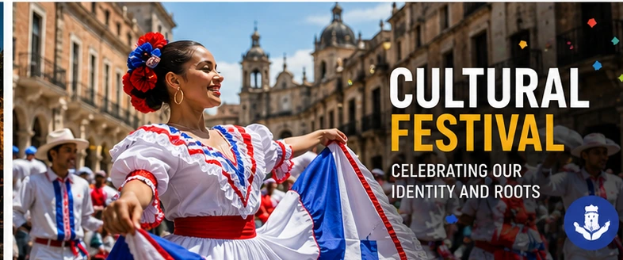
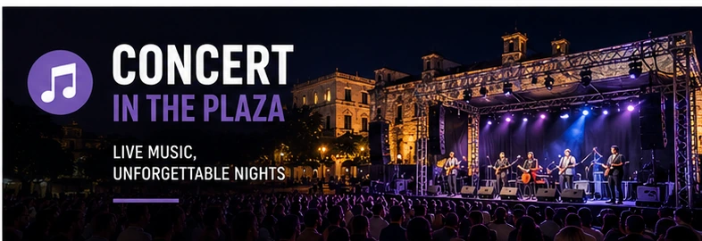
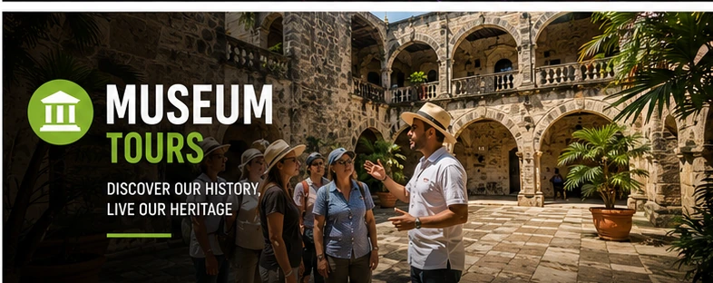
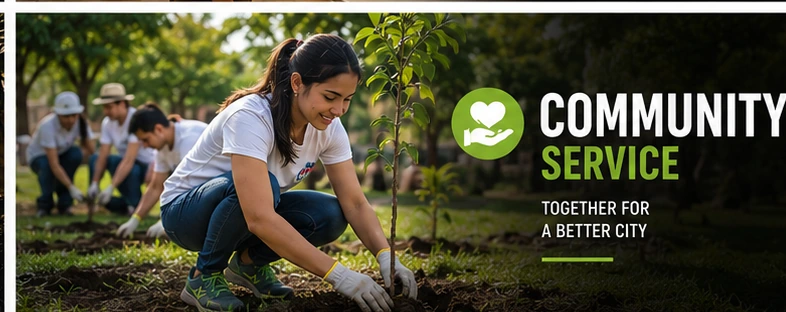

Festival de Cultura

Celebrate Santo Domingo’s traditions with music, dance, and food. This annual festival brings together the community to honor local heritage.

Celebrate Santo Domingo’s traditions with music, dance, and food. This annual festival brings together the community to honor local heritage.

Join us for a live concert featuring local artists. Enjoy an evening of music under the stars in the heart of Santo Domingo.

Discover contemporary Dominican art at this special exhibition showcasing local painters and sculptors.

Volunteer with neighbors to clean parks, plant trees, and strengthen community bonds across Santo Domingo.